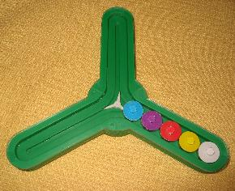
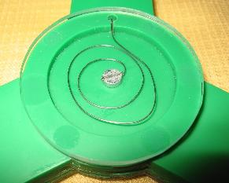

Windmill ☕
This JAVA applet is a software implementation of the Windmill puzzle, a mechanical puzzle by Oskar van Deventer, see photos below. After scrambling the disks, can you get them back to their original position?
Aim
Scramble the disks and then try to get them sorted again by rotating the windmill left or right.
Controls
Use Reset to restart the puzzle
Use # disks drop-list to select a puzzle
Use Animation speed slider to adjust the speed of the animation
Movement
First scramble the puzzle...
Use Start Scramble to scramble the puzzle
Use Stop Scramble to stop the scrambling
Then start solving the puzzle...
Use Turn Left to turn the windmill left
Use Turn Right to turn the windmill left
Here are two photos of the Windmill puzzle in its original mechanical form. The spring on the back ensures the central 'flipper' springs back and forth correctly, dropping discs alternately left and right.


concept & applet - © Oskar van Deventer - 2003
hosted with permission from Oskar van Deventer